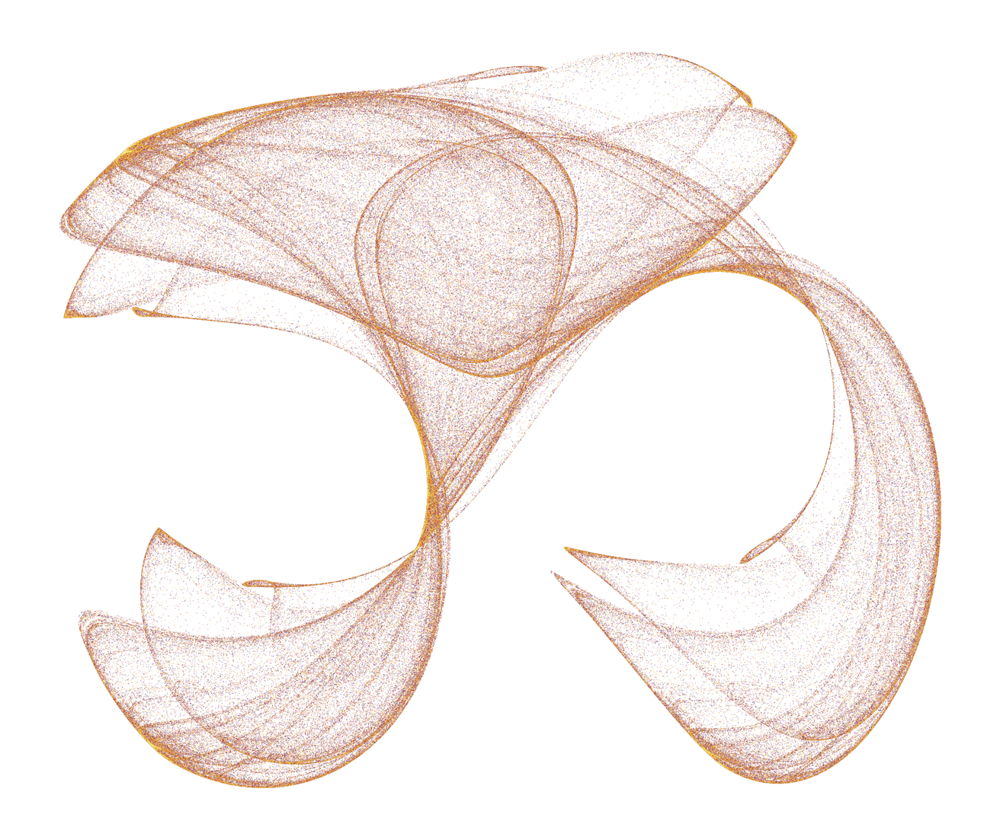

A strange attractor is what you get when a system is chaotic but still
bounded. It never settles down to a fixed point, never falls into a
repeating loop, and never flies off to infinity either. It just keeps
wandering forever inside a contained region of space, tracing out a shape
that has structure at every scale you zoom into.
The part that took me a while to actually believe: there is no randomness
anywhere in these systems. The equations are completely deterministic. Run
them twice from the exact same starting point and you get the exact same
path, every time. The chaos comes entirely from sensitivity to where you
started. Move the initial point by a millionth and the two trajectories
stay close for a while, then diverge completely. Same rules, same
determinism, wildly different outcome.
Edward Lorenz found the canonical example in 1963 while modeling
atmospheric convection. Three coupled differential equations, nothing
exotic:
With the usual constants (sigma=10, rho=28, beta=8/3), that produces
output that looks like structured noise, and a shape people ended up
calling the butterfly.
separation -
Two runs of the same equations, same constants, starting positions a millionth apart (grey and white). They ride the same lobe for a while, then peel apart onto different loops. Nothing here is random - press restart to run it again and watch it diverge differently, from the same tiny nudge. Drag sigma, rho or beta to see how the shape itself depends on the constants, not just the starting point; reset to default returns to Lorenz's own 10, 28, 8/3.
Not building it by hand this time
The last graphics thing I built was a raymarcher in plain Java, no
libraries, on purpose. This project I did the opposite and reached
straight for Python and a plotting library, also on purpose.
The difference is what each project was actually for. With the raymarcher,
the whole point was understanding the machinery, so writing my own vector
math was the work, not a detour. Here, the machinery is four lines of
arithmetic per system. What I actually wanted was to try a parameter, look
at it, change it, and look again, fast. Writing my own 3D renderer would
have been procrastination dressed up as rigor.
Same word, "attractor", genuinely different object.
Then one of them refused to fit
Getting the first one on screen
The build order was deliberately boring. Before touching any real math I
plotted a throwaway spiral, just to confirm the 3D plotting pipeline
worked at all. Then the Lorenz step function, sanity checked by hand on a
single point. Then the integration loop, which is about as simple as
numerical integration gets:
p = starting point
repeat n_steps times:
dx, dy, dz = step(p)
p = p + (dx, dy, dz) * dt
record p
That is Euler integration: take the derivative at where you are, take a
small step in that direction, repeat. It accumulates error over time and
there are much better methods, but for drawing a picture of an attractor
it is completely fine.
The butterfly showed up on the first real attempt, which felt suspicious
but turned out to be true.
The four bugs
Animating it is where the actual time went. Four separate bugs, each one
silent in its own way:
Axis ranges being ignored. I set the axis ranges to stop the plot from
rescaling itself, and nothing happened. In 3D figures the xaxis,
yaxis, and zaxis settings have to be nested inside a scene object,
not passed at the top level like they are for 2D. Passed at the top level
they are silently discarded. No warning, no error, just no effect.
A redraw flag that only matters in 3D. Animation frames have a
redraw option that you can safely turn off for 2D scatter plots as a
performance win. In a 3D scene, turning it off silently breaks the
animation's progression instead. It had to be on.
A vanishing loop. Across a few rounds of restructuring the script, the
loop that actually built the trajectory kept getting lost in copy-paste.
The symptom was an IndexError that made no sense until I checked and
found my coordinate lists had exactly one point in them. The animation was
faithfully trying to animate a single dot.
Frames from two attractors in one figure. After adding a second
attractor, I reused the same frames list without clearing it. Lorenz
frames and the new attractor's frames got concatenated into one sequence,
so the animation played one attractor and then abruptly cut to a
completely different one in the same box.
None of these threw a useful error. Every one of them just quietly did
something other than what I meant.
A second system
Rössler was next. Same three-equation, same-integration-loop pattern,
different arithmetic:
With a=0.2, b=0.2, c=5.7 it produces something visually very different
from Lorenz: a single flat spiral band that winds outward, then
periodically kicks up out of the plane and folds back into the middle.
Lorenz has two lobes and a rough symmetry; Rössler has one band and a
fold.
It also needed different numbers to look right. A different step size, and
roughly twice as many total steps before the folding structure becomes
visible at all. That was the first hint that "how long do I run this for"
is a per-system property, not a global setting.
Making the second one boring
At this point the script had two nearly identical blocks of code, one per
attractor, and I was about to add a third. So I stopped and pulled out two
functions.
The first takes any step function at all and integrates it:
integrate(step_fn, initial, dt, n_steps)
The second takes a list of finished trajectories and renders them into one
synchronized animation, side by side:
The speed value there exists because the attractors need different step
counts, but they share one animation clock. It scales how fast each one
draws relative to the others, so a system that needs 40,000 steps and one
that needs 10,000 can still finish at roughly the same moment.
The payoff was immediate. Adding Aizawa, which is a genuinely more
complicated system with six parameters and a cubic term:
took one new step function and one new line in a list. Zero changes to
anything structural. It produces a layered, shell-like spiral that looks
like something turned on a lathe.
Four systems, one framework, one animation clock. Lorenz, Rössler, Aizawa, Thomas.
Then one of them refused to fit
Clifford is where the framework stopped working, and understanding why was
the most interesting part of the whole project.
Everything so far has been a continuous system. There is a smooth path
through space, and consecutive points along it are close together. That is
exactly why animating a dot tracing a connected line makes sense as a way
to show it, and why dt means anything at all.
There is no derivative here and no time step. You take a point, apply the
formula, and get the next point, which can land anywhere in the plane.
Consecutive points are not neighbours. There is no path. Drawing a line
between them would be drawing a relationship that does not exist.
So the attractor's shape does not emerge from following a trajectory. It
emerges statistically, from plotting hundreds of thousands of points and
seeing where they pile up. Some regions get visited constantly and go
dense, others almost never. I rendered half a million iterations as a
single static scatter, coloured by iteration order:

The Clifford attractor. No animation, no path, no dt. Half a million points, and the shape is what the density does.
Same word, "attractor", genuinely different object. It needed its own
render path, and no amount of framework design would have prevented that,
because the difference is mathematical, not architectural.
Coda
Thomas' cyclically symmetric attractor went in last, and it went back to
being boring in the good way. One parameter, and unusually for this group,
it is built from trigonometric functions rather than polynomials:
With b=0.208186 it gives a softer, more rounded kind of chaos than the
others. It also evolves much more slowly, so it needed a step size five
times larger than Lorenz's and about four times as many steps. Two numbers
and one line, no structural changes.
One practical thing worth writing down: going from three panels to four
made rendering the animation noticeably slower, in a way the interactive
version never was. Once you export to a GIF, every frame has to be
rasterized and encoded up front, so frame count is a direct multiplier on
render time. The lever for that is how many simulation steps you skip
between captured frames. Playback speed is set separately, so skipping
more does not make the result look choppier, it just means fewer frames to
build. Going from four panels back down to a reasonable render time was a
one-number change.
The whole thing is about 130 lines now, and adding a fifth continuous
attractor would be maybe six of them.